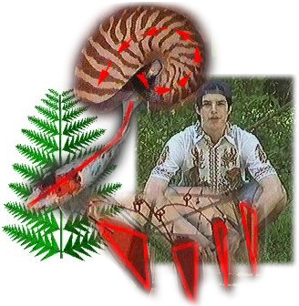

| |
Geometry in Nature and Art
Geometry in Nature and Art is a short video that looks at many examples of how geometry is seen in plants, animals, and artwork. Daniel Berger-Jones stars in this film as a jungle safari guide. This film is dubbed, although the original version was also in English.

Home
|